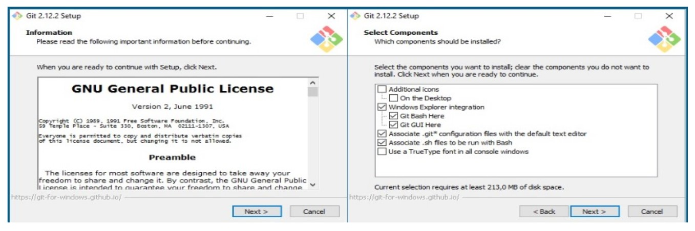
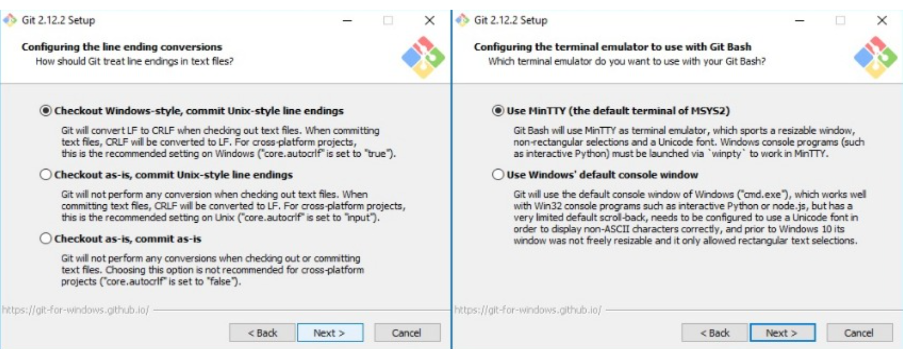

Una Versión de Control ayuda a los desarrolladores llevar un registro y administrar cualquier cambio
en el código del proyecto de software. A medida que crece este proyecto, la versión de control se vuelve esencial.
GIT es un sistema de control de versiones creado por Linux Torvalds en el año 2005.
Un sistema de control de versiones es un programa que nos permite almacenar todos todos
los cambios que hagamos a uno o varios archivos, de esta forma podemos tener un registro de todas
las modificaciones que sufran estos archivos y así en caso de algún error poder regresar a una
versión anterior.
Instalación de GIT
Para instalar GIT lo primero que debemos hacer es ir a la página oficial y seleccionaremos la aplicación
de acuerdo a nuestro sistema operativo, en nuestro caso descargaremos la versión para windows, pero también
se puede descargar en MAC OS X, LINUX y SOLARIS.
Imagen 1.1. GIT Instalación. Creación propia.
Una ves descargado ejecutamos el instalador, este nos pedirá permisos de administrador, se los concedemos y nos
aparecerán las siguientes dos ventanas a las cuales damos siguiente:

Imagen 1.2. GIT Instalación. Creación propia.
A continuación, nos pregunta con qué línea de comandos queremos manejar el GIT, podemos elegir GIT Bash,
el CMD de Windows o GIT Bash con algunas características de Windows. En nuestro caso dejaremos el que viene
por defecto y pulsamos siguiente; Enseguida nos pregunta por qué librerías de certificados de seguridad queremos
usar, dándonos dos (2) opciones: Open SSL y las nativas de Windows, seleccionaremos la que deseemos usar y damos
click a siguiente:
Imagen 1.3. GIT Instalación. Creación propia.
A continuación nos enseñará dos pantallas más de personalización de la línea de comandos, como en lugar de la línea
de comandos vamos a usar la interfaz de usuario de GITHUB dejaremos los valores por defecto.

Imagen 1.4. GIT Instalación. Creación propia.
Finalmente nos aparece la opción "Install", damos click en esta y esperamos a que termine de instalar GIT en nuestro
equipo. Una vez terminada la instalación, nos dará la opción de ejecutar GIT Bash y de ver las notas de la versión, damos
click en finalizar y habremos terminado.